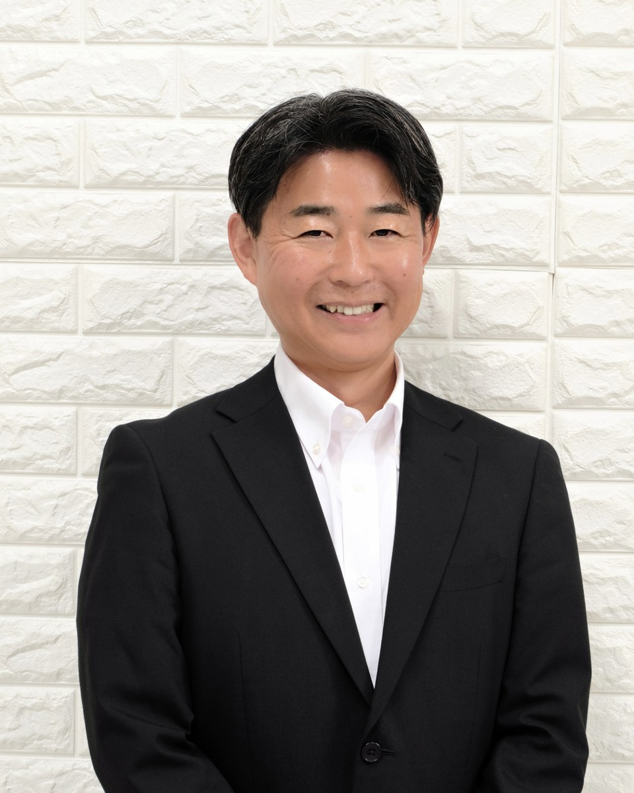

エッジAI
エッジデバイス上で動作するAIの研究と、現場への実装・運用を検証します。
→EDGE AI / LOCAL GENERATIVE AI / HYBRID CLOUD
エッジAIラボラトリーは、ローカル生成AI、AIエージェント、RAG、ハイブリッドクラウドを組み合わせ、企業の現場で価値を生むAIソリューションを研究・実践するラボです。
特定の製品やベンダーに依存せず、企業利用に必要な技術を中立的な立場から検証します。
エッジAIラボラトリーは、特定ベンダーの製品を推奨するためのサイトではありません。目的、制約、セキュリティ、運用性を踏まえ、最適な技術の組み合わせを検証します。
特定ベンダーに依存しない中立的な技術評価
実際に構築して得た知見と失敗事例を重視
セキュリティと運用を含めた企業利用の視点
技術を実際に組み合わせ、企業で利用できる構成・運用方法を検証しています。
オンプレミス環境で動作する生成AI基盤を構築し、セキュリティ、性能、運用性を検証します。
メール、文書、ナレッジ検索などの業務を支援するAIエージェントの実装を研究します。
クラウドとオンプレミスを柔軟に組み合わせ、特定ベンダーに依存しないAI基盤を設計します。
構築手順、検証結果、運用上の気づきをアメブロで公開しています。
ブログで蓄積した構築手順や検証結果を体系化し、Kindle出版、技術講演、寄稿へ展開していきます。
環境構築から企業活用まで
EDGEAI LABORATORY
企業ITインフラの設計・構築・運用に携わりながら、エッジAI、ローカル生成AI、AIエージェント、ハイブリッドクラウドを研究しています。実践と検証から得た知見をもとに、企業で活用できるAIソリューションを発信しています。
企業IT基盤の設計・構築・運用改善を支援
エッジAI・生成AIの実装と検証を継続
ブログ・書籍・講演を通じて実践知を共有
お問い合わせ窓口はメール環境の開通後に正式運用を開始します。